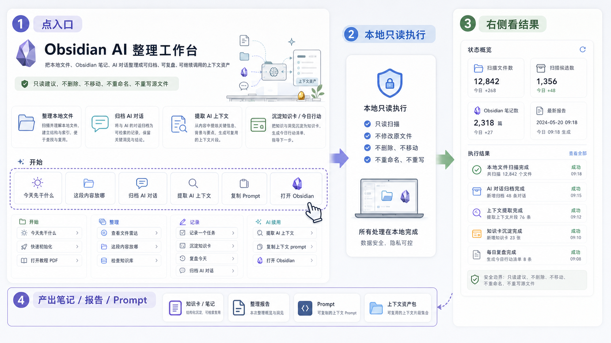
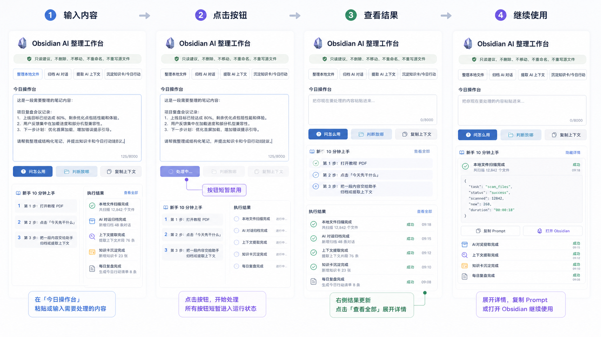

1. 先输入或直接点
今日操作台里的文本会作为分类、归档、上下文提取的输入。空着也能点，系统会用默认任务。
这页只解释 GUI 交互：每个入口点击后会调用本地 action，右侧会更新结果，详情会进入“查看全部”。记录类按钮才会新建 Obsidian 笔记。


今日操作台里的文本会作为分类、归档、上下文提取的输入。空着也能点，系统会用默认任务。
按钮点击后会短暂禁用，避免重复提交。文件雷达和知识库体检默认只生成报告，不搬动源文件。
右侧显示本次 action 是否成功。需要路径、来源或 prompt 时点“查看全部”展开 JSON。
| 想做什么 | 点击入口 | 点击后结果 | 文件影响 |
|---|---|---|---|
| 今天不知道先处理什么 | 今天先干什么 | 给 1-3 个轻量重点 | 只读 |
| 不知道一段内容放哪 | 这段内容放哪 | 返回生活/学习/工作和放置建议 | 只读 |
| 想看本地文件情况 | 查看文件雷达 | 返回扫描报告、候选、大文件 | 报告 |
| 想检查 Obsidian 是否混乱 | 检查知识库 | 返回收件箱、断链、空壳笔记等结果 | 报告 |
| 记录一个具体任务 | 记录一个任务 | 新建 Action 任务笔记 | 写新笔记 |
| 沉淀可复用经验 | 沉淀知识卡 | 新建 Card 知识卡 | 写新笔记 |
| 做轻量日复盘 | 复盘今天 | 新建 Time 复盘笔记 | 写新笔记 |
| 保存已有 AI 对话 | 归档 AI 对话 | 新建 AI 对话归档笔记 | 写新笔记 |
| 让新 AI 对话获得上下文 | 提取 AI 上下文 / 复制上下文 prompt | 返回来源、相关原因、压缩上下文和可复制 Prompt | 只读 |
| 进入真实知识库 | 打开 Obsidian | 打开本地 vault 路径 | 不改源文件 |